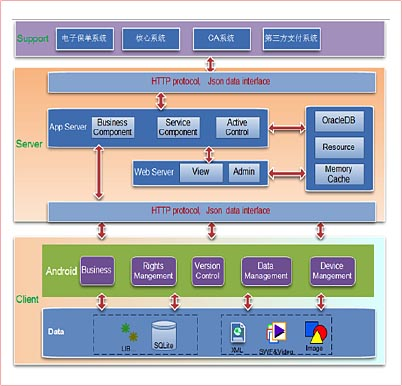
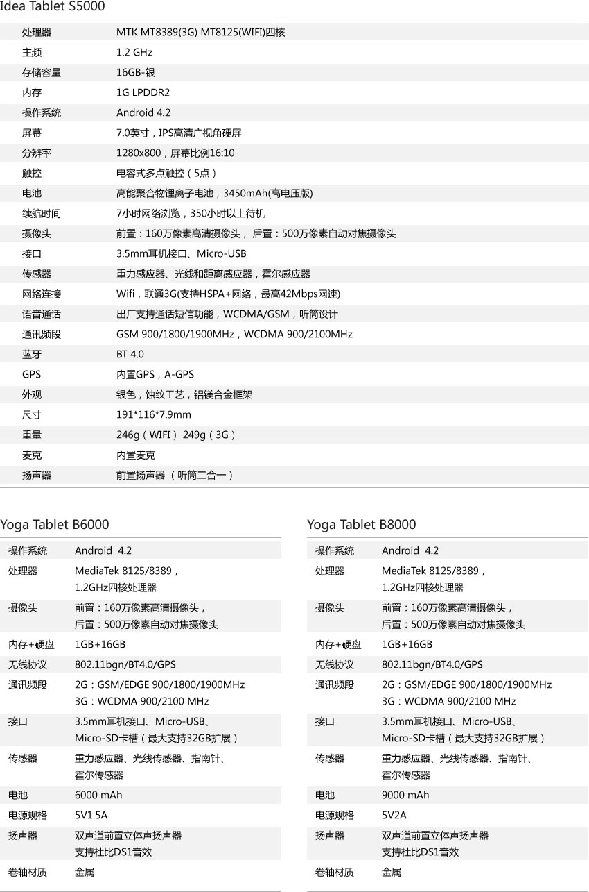
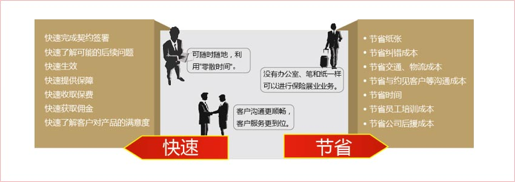

联想保险移动展业解决方案
移动展业系统面向不同营销渠道的业务人员，业务人员可以使用PAD终端进行展业活动，系统通过与核心业务以及第三方支付平台的对接实现实时投保建议书，现场投保，在线承保等功能，能有效提高业务员出单的效率并降低成本。
-
方案构架

-
方案特点
- 安全性：系统分别从硬件、软件和业务三个方面保障整个平台的安 全性，在系统安全、应用安全、数据安全等方面进行了充分的保证，为客户提供完整的安全机制。
- 易操作：系统设计时充分考虑了功能和交互界面的简易性和可操作 性，“一键通”功能使用户从开始有投保意向到投保结束只需简单手指操作，应用非常简单。
- 高效性：业务员可通过移动展业系统自助录入保单并实时上传数据，替代了传统流程的诸多环节，使工作效率有了质的飞跃，同时实施移动展业系统可以取代或分流传统录单工作，从而降低营运成本。
- 准确性：掌握第一手资料的业务员通过移动展业系统录入信息，能 够有效确保信息准确性，同时电子化录入方式可以规避人为出错的可能性，降低出错的概率。
- 多种外设功能集成，包括2代身份证读卡器、蓝牙打印机、蓝牙指 纹仪、移动收款机、无线投屏背夹等。
- 兼容多种第3方支付，包括通联划款、音频POS、快刷银行转账等。
联想平板产品平台

客户收益
投保实时生效模式极为快速、节省，极大突出专业优势。在提高客户满意度、提高销售效率和成功率、提升差异化竞争优势方面具有显著效果。

- 提高效率通过平板电脑现场录入、提交客户信息，生成投保建议书，将原来需要3~5个工作日的业务流程缩短到清洁件现场出单，极大地提高了工作效率。
- 提高一次成单率保险代理人通过联想平板电脑预设的身份识别、现场拍照存档、电子签名辅助及第3方支付平台等功能，实现现场收款一次承保，从 而大大提高一次成单率。
- 降低成本通过移动展业模式，保险公司可以大幅节省外包录入、纸张资料寄送、电话核对及人员交通成本和资料审核的时间成本，此外业务员工作效率提高使得公司的业务员单位时间产出增加，从而极大地提高市场竞争力。
- 提高业务员积极性由于保险业务员通过移动展业工具可以大幅提高一次成单率，因此其个人收入与成就感都大幅提升，从而极大地激发了业务员的工作积极性。